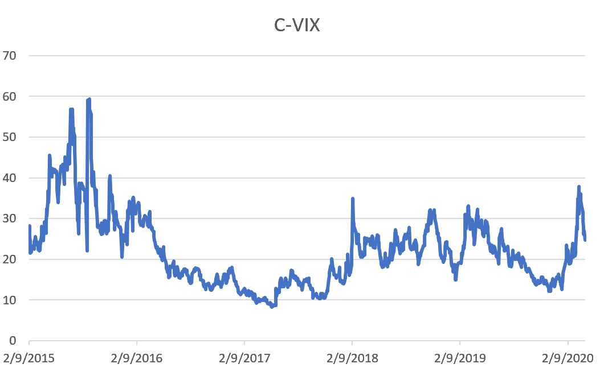

Main Fields:
Other Interests: Investment, Asset Pricing, Natural Language Processing (NLP), Machine Learning (ML)
Kreeger, 4400 Massachusetts Ave NW, Washington, DC, USA
What's New
●Forthcoming, IMF Economic Review: Stock Prices and Economic Activity in the Time of Coronavirus
Replication Package
● JMP (update on Oct. 26, 2021): Manager Attention and Leverage Dynamics

● Updates of China EPU: Mainland China Economic Policy Uncertainty
● Updates of China VIX Index (Feb. 2015 -- Mar. 2020):

I am an Economics Ph.D. candidate at American University. I received an B.S. degree in Finance from the University of International Business and Economics.
Besides being a Ph.D. Candidate, I am an Adjunct Instructor, Financial Economist, and a Machine-Learning & Natural Langurage Processing (NLP) enthusiast. I volunteer in DataKind D.C. Chapter. Our recent project works on the U.S. Small Business Administration's database of COVID relief PPP loans. The project is coordinating with National Press Foundation.